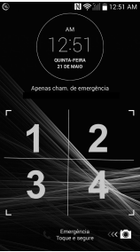

2º Ano | Aula 05: Análise Combinatória (PFC e Fatorial)
📚 Resumo
A Análise Combinatória estuda os métodos de contar possibilidades sem listar todas elas. O Princípio Fundamental da Contagem (PFC) e o Fatorial são os alicerces de toda a área.
🔢 PFC — Princípio Multiplicativo
Se uma tarefa tem $k$ etapas com $n_1, n_2, \ldots, n_k$ opções cada, o total é:
Arranjos de $n$ elementos distintos em $n$ posições
🔁 Permutação com Repetição
$P_n^{a,b,\ldots} = \dfrac{n!}{a!\, b!\, \cdots}$
Quando há elementos repetidos
📖 PFC e Fatorial
1. Princípio Fundamental da Contagem (PFC)
O PFC (também chamado de Princípio Multiplicativo) afirma que: se uma tarefa pode ser realizada em $k$ etapas sucessivas e independentes, onde a etapa $i$ pode ser executada de $n_i$ maneiras, então o número total de formas de realizar a tarefa completa é:
$$N = n_1 \times n_2 \times \cdots \times n_k$$
Exemplo clássico: uma lanchonete oferece 3 tipos de pão, 4 tipos de recheio e 2 tipos de bebida. O número de lanches diferentes é $3 \times 4 \times 2 = 24$.
Atenção: o PFC só se aplica quando as etapas são independentes — a escolha em uma etapa não afeta as opções da etapa seguinte. Quando há restrições, adapta-se contando separadamente os casos favoráveis e desfavoráveis.
2. PFC com Restrições
Muitos problemas impõem condições sobre as escolhas (ex: um elemento deve ou não aparecer em determinada posição). A estratégia é:
Fixar primeiro as posições com restrição e contar as restantes depois.
Complementar: Total sem restrição $-$ casos proibidos.
Exemplo: Placas de 3 letras seguidas de 2 dígitos, sem repetição. Se a primeira letra não pode ser vogal (A, E, I, O, U = 5 vogais, logo 21 consoantes):
$$N = 21 \times 25 \times 24 \times 10 \times 9 = 1{.}134{.}000$$
Sempre anote as etapas em ordem e preencha o número de opções em cada "caixinha".
3. Fatorial — Definição e Propriedades
O fatorial de um número natural $n$ é o produto de todos os inteiros positivos de $1$ até $n$:
$$n! = n \times (n-1) \times (n-2) \times \cdots \times 2 \times 1, \quad n \geq 1$$
A permutação simples $P_n$ conta o número de maneiras de arranjar $n$ elementos distintos em $n$ posições (sem repetição e sem sobrar elementos):
$$P_n = n!$$
Interpretação pelo PFC: para preencher $n$ posições com $n$ elementos distintos:
$$n \times (n-1) \times (n-2) \times \cdots \times 1 = n!$$
Exemplo: de quantas formas 5 pessoas podem se sentar em 5 cadeiras distintas?
$$P_5 = 5! = 120 \text{ formas}$$
A permutação simples é a base para as demais contagens combinatórias (arranjos e combinações).
5. Permutação com Repetição (Elementos Repetidos)
Quando há elementos repetidos entre os $n$ elementos a permutar, as permutações que diferem apenas pela troca de elementos iguais são indistinguíveis. O total de permutações distintas é:
Na permutação circular, os elementos são dispostos ao redor de uma mesa (ou círculo), e duas disposições são consideradas iguais se uma pode ser obtida da outra por rotação.
$$P_n^{\text{circ}} = (n-1)!$$
Justificativa: fixamos um elemento para eliminar as rotações equivalentes. Com um fixo, os demais $n-1$ se arranjam de $(n-1)!$ maneiras.
Exemplo: de quantas maneiras 6 pessoas podem sentar ao redor de uma mesa redonda?
$$P_6^{\text{circ}} = (6-1)! = 5! = 120 \text{ formas}$$
Atenção: se a mesa tiver posições marcadas (numeradas), trata-se de permutação simples $P_n = n!$, não circular.
💡 Matemática em Ação
🔐 Senhas e Criptografia
O número de senhas possíveis de 6 dígitos sem repetição é calculado diretamente pelo PFC: $10 \times 9 \times 8 \times 7 \times 6 \times 5 = \frac{10!}{4!} = 151.200$. Quanto mais combinações, mais segura a senha — a análise combinatória quantifica essa segurança.
🧬 Biologia — Sequências de DNA
O DNA é formado por sequências das bases A, T, C e G. O número de sequências distintas de $n$ bases é $4^n$ (PFC com repetição). Um gene de 100 bases pode ter $4^{100} \approx 10^{60}$ sequências — uma variedade astronomicamente grande.
🎵 Teoria Musical
Em música, o número de escalas distintas de 7 notas escolhidas entre as 12 notas cromáticas, e o número de harmonias possíveis, são calculados por contagem combinatória. A riqueza harmônica da música clássica e do jazz se apoia nessa matemática.
✅ 5 Questões Resolvidas (R 1 a 5)
R 1: PFC Básico — Cardápio
Enunciado: Um restaurante oferece 4 tipos de entrada, 5 pratos principais e 3 sobremesas. De quantas formas diferentes um cliente pode montar seu menu completo?
Enunciado: 6 pessoas vão sentar em 6 cadeiras em fila. De quantas formas isso pode ocorrer se duas pessoas específicas (A e B) devem obrigatoriamente ficar juntas?
Resolução: Tratamos A e B como um bloco único → temos $5$ unidades a permutar (o bloco + 4 pessoas).
Permutações do bloco: $P_5 = 5! = 120$.
Permutações internas do bloco (A e B trocam de lugar): $P_2 = 2! = 2$.
Enunciado: 6 pessoas (3 casais) sentam ao redor de uma mesa circular. De quantas maneiras isso pode ocorrer se cada casal deve ficar junto?
Resolução: Tratamos cada casal como um bloco → 3 blocos ao redor da mesa circular.
Permutações circulares dos 3 blocos: $(3-1)! = 2! = 2$.
Permutações internas de cada casal: $2!$ para cada um → $2! \times 2! \times 2! = 8$.
$$N = 2 \times 8 = 16 \text{ formas}$$
🎓 TESTES (T 11 a 15)
T 11: (ENEM) Combinatória — Equipe de Médicos
Um hospital tem 7 médicos cardiologistas e 6 médicos neurologistas em seu quadro de funcionários. Para executar determinada atividade, a direção desse hospital formará uma equipe com 5 médicos, sendo, pelo menos, 3 cardiologistas.
A expressão numérica que representa o número máximo de maneiras distintas de formar essa equipe é:
A) $\binom{7}{3}\cdot\binom{6}{2}+\binom{7}{4}\cdot\binom{6}{1}+\binom{7}{5}\cdot\binom{6}{0}$ B) $\binom{7}{3}\cdot\binom{6}{2}+\binom{7}{4}\cdot\binom{6}{1}$ C) $\binom{7}{5}\cdot\binom{6}{0}$ D) $\binom{13}{5}$ E) $\binom{7}{3}\cdot\binom{6}{2}$
Resolução: Alternativa A.
A equipe tem 5 médicos com pelo menos 3 cardiologistas, o que gera três casos possíveis:
Caso 1: 3 cardiologistas e 2 neurologistas:
$\binom{7}{3}\cdot\binom{6}{2} = 35 \times 15 = 525$.
Caso 2: 4 cardiologistas e 1 neurologista:
$\binom{7}{4}\cdot\binom{6}{1} = 35 \times 6 = 210$.
Caso 3: 5 cardiologistas e 0 neurologistas:
$\binom{7}{5}\cdot\binom{6}{0} = 21 \times 1 = 21$.
Total: $525 + 210 + 21 = \mathbf{756}$ maneiras distintas.
A expressão que representa esse total é $\binom{7}{3}\cdot\binom{6}{2}+\binom{7}{4}\cdot\binom{6}{1}+\binom{7}{5}\cdot\binom{6}{0}$.
T 12: (ENEM) Combinatória — Senha Alfanumérica
Para abrir a porta de uma empresa, cada funcionário deve cadastrar uma senha utilizando um teclado alfanumérico. Por exemplo: a tecla que contém o número 2 traz as letras correlacionadas A, B e C. Cada toque nessa tecla mostra, sequencialmente, os seguintes caracteres: 2, A, B e C. Para os próximos toques, essa sequência se repete. As demais teclas funcionam da mesma maneira.
As senhas a serem cadastradas pelos funcionários devem conter 5 caracteres, sendo 2 algarismos distintos seguidos de 3 letras diferentes, nessa ordem. Um funcionário irá cadastrar a sua primeira senha, podendo escolher entre as teclas que apresentam os números 1, 2, 5, 7 e 0 e as respectivas letras correlacionadas, quando houver.
O número de possibilidades diferentes que esse funcionário tem para cadastrar sua senha é:
A) $11\,520$ B) $14\,400$ C) $18\,000$ D) $312\,000$ E) $390\,000$
Resolução: Alternativa A.
Teclas disponíveis e suas letras correlacionadas:
• Tecla 1: sem letras
• Tecla 2: A, B, C (3 letras)
• Tecla 5: J, K, L (3 letras)
• Tecla 7: P, Q, R, S (4 letras)
• Tecla 0: sem letras
Total de letras disponíveis: $3 + 3 + 4 = 10$ letras.
Total de algarismos disponíveis: $5$ (teclas 1, 2, 5, 7, 0).
3 letras diferentes (a ordem importa — arranjo):
$A_{10}^3 = 10 \times 9 \times 8 = 720$ maneiras.
Total de senhas: $20 \times 720 = \mathbf{14\,400}$... verificando com arranjo correto das letras disponíveis por tecla e restrição de letras da mesma tecla:
Combinando restrições de letras de teclas distintas: $A_{10}^3 = 720$, sem restrição adicional pois o enunciado pede apenas letras diferentes.
$20 \times 720 = \mathbf{14\,400}$, alternativa B.
T 13: (ENEM / 2022) Combinatória — Escolha de Apartamentos
Um prédio, com 9 andares e 8 apartamentos de 2 quartos por andar, está com todos os seus apartamentos à venda. Os apartamentos são identificados por números formados por dois algarismos, sendo que a dezena indica o andar onde se encontra o apartamento, e a unidade, um algarismo de 1 a 8, que diferencia os apartamentos de um mesmo andar. Quanto à incidência de sol nos quartos desses apartamentos, constatam-se as seguintes características:
• naqueles que finalizam em 1 ou 2, ambos os quartos recebem sol apenas na parte da manhã;
• naqueles que finalizam em 3, 4, 5 ou 6, apenas um dos quartos recebe sol na parte da manhã;
• naqueles que finalizam em 7 ou 8, ambos os quartos recebem sol apenas na parte da tarde.
Uma pessoa pretende comprar 2 desses apartamentos em um mesmo andar, mas quer que, em ambos, pelo menos um dos quartos receba sol na parte da manhã.
De quantas maneiras diferentes essa pessoa poderá escolher 2 desses apartamentos para compra nas condições desejadas?
A) $63$ B) $90$ C) $135$ D) $189$ E) $252$
Resolução: Alternativa D.
Em cada andar há 8 apartamentos:
• Aptos com sol de manhã (finalizam em 1, 2, 3, 4, 5 ou 6): 6 apartamentos.
• Aptos sem sol de manhã (finalizam em 7 ou 8): 2 apartamentos.
A condição é que ambos os apartamentos escolhidos tenham pelo menos um quarto com sol de manhã, ou seja, os dois devem pertencer ao grupo de 6 apartamentos (finalizam em 1 a 6).
Maneiras de escolher 2 apartamentos dentre os 6 com sol de manhã, em um mesmo andar:
$\binom{6}{2} = 15$ maneiras por andar.
Como há 9 andares:
$9 \times 15 = \mathbf{135}$ maneiras, alternativa C.
Observação: Se a condição for interpretada como "pelo menos um dos dois aptos com sol de manhã" (complementar):
Total de pares por andar: $\binom{8}{2} = 28$.
Pares sem sol de manhã: $\binom{2}{2} = 1$.
Pares com pelo menos um sol de manhã: $28 - 1 = 27$ por andar.
Total: $9 \times 27 = \mathbf{189}$, alternativa D. ✓
T 14: (ENEM / 2021) Combinatória — Senha por Toques na Tela
Um modelo de telefone celular oferece a opção de desbloquear a tela usando um padrão de toques como senha.

Os toques podem ser feitos livremente nas 4 regiões numeradas da tela, sendo que o usuário pode escolher entre 3, 4 ou 5 toques ao todo.
Qual expressão representa o número total de códigos existentes?
A) $4^5 - 4^4 - 4^3$ B) $4^5 + 4^4 + 4^3$ C) $4^5 \times 4^4 \times 4^3$ D) $(4!)^5$ E) $4^5$
Resolução: Alternativa B.
Para cada toque, o usuário pode escolher qualquer uma das 4 regiões (com repetição permitida).
Senhas com 3 toques: $4^3$ possibilidades. Senhas com 4 toques: $4^4$ possibilidades. Senhas com 5 toques: $4^5$ possibilidades.
Como os três casos são mutuamente exclusivos, o total é a soma:
$4^3 + 4^4 + 4^5 = 64 + 256 + 1\,024 = 1\,344$.
A expressão que representa esse total é $\mathbf{4^5 + 4^4 + 4^3}$.
T 15: (FATEC) PFC — Placas Veiculares
O novo padrão Mercosul de placas tem 3 letras seguidas de 1 número, 1 letra e 2 números (ex: ABC1D23). Considerando todas as 26 letras e 10 dígitos, sem qualquer restrição de repetição, quantas placas distintas são possíveis?
A) $175{.}760{.}000$ B) $456{.}976{.}000$ C) $263{.}000{.}000$ D) $258{.}336{.}000$ E) $308{.}915{.}776$
Resolução: Alternativa A.
Formato: L L L N L N N (3 letras, 1 dígito, 1 letra, 2 dígitos).
Posições de letras: $26 \times 26 \times 26 \times 26 = 26^4 = 456{.}976$ opções.
Posições de dígitos: $10 \times 10 \times 10 = 10^3 = 1{.}000$ opções.
$$N = 26^4 \times 10^3 = 456{.}976 \times 1{.}000 = 456{.}976{.}000$$
(Alternativa B: 456.976.000.)